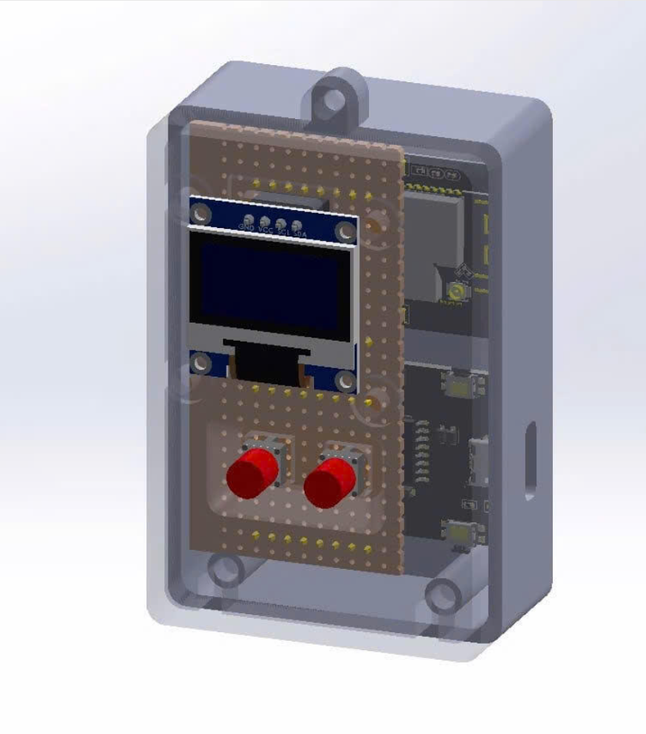
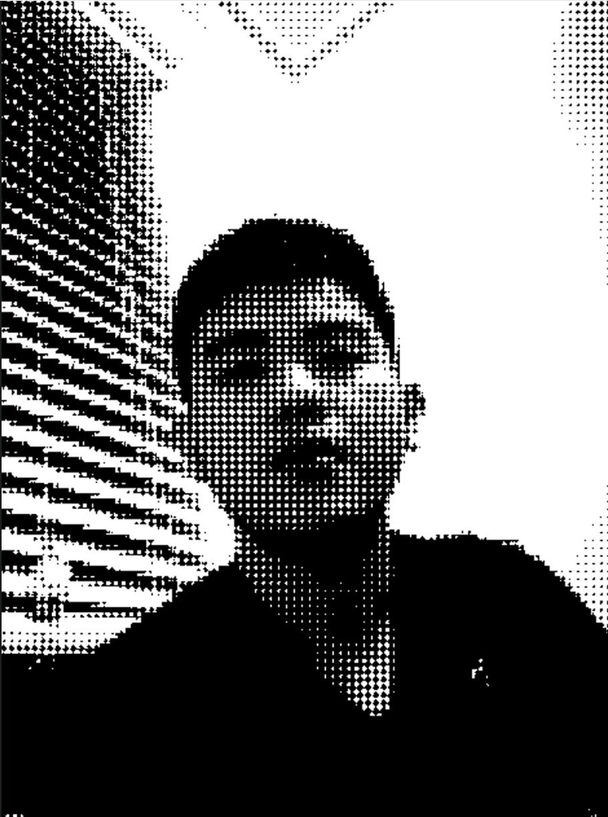
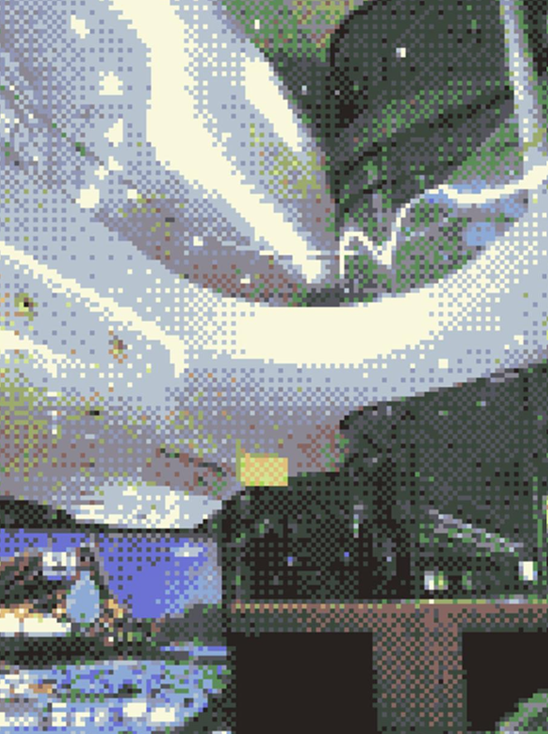
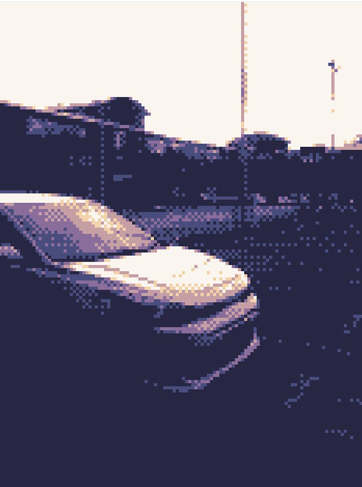

A pocket camera that shoots in dither
A personal build: a handheld ESP32 camera in a 3D-printed case, with an OLED screen and two buttons. It saves photos as ordered-dither pixel images. The self-portrait on the home page was taken with it.
- Type
- Personal build
- Board
- ESP32 camera
- Interface
- OLED · 2 buttons
- Output
- Bayer-dithered images · SD card

Photographs
Shot on it(03)


